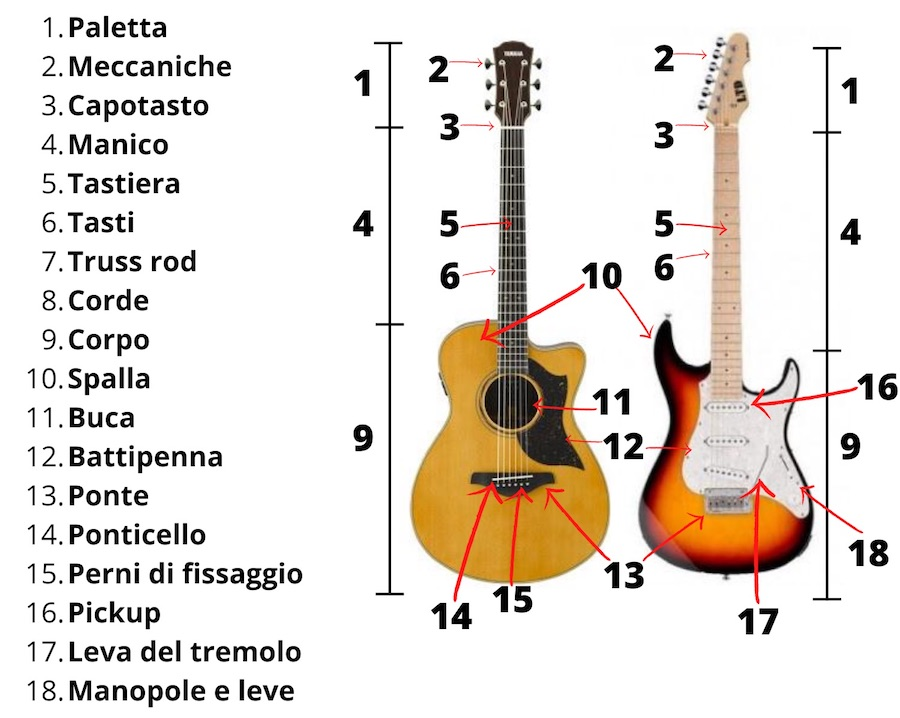
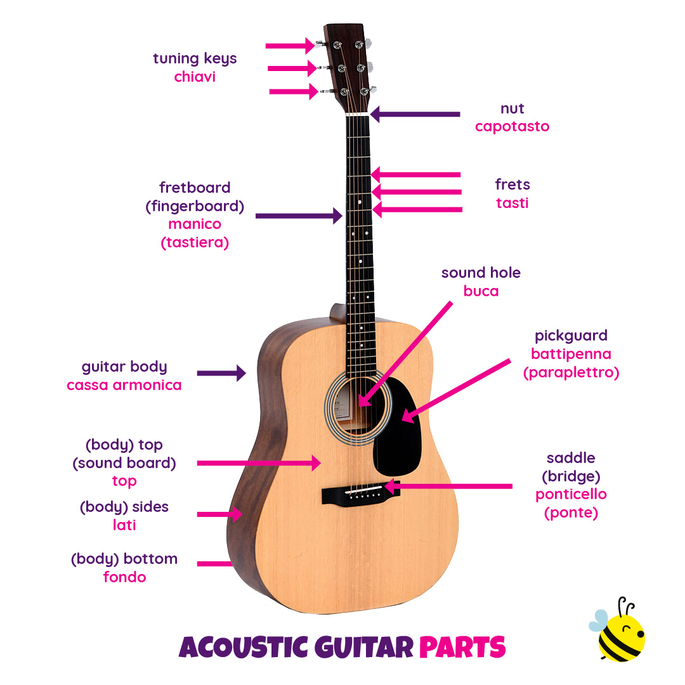
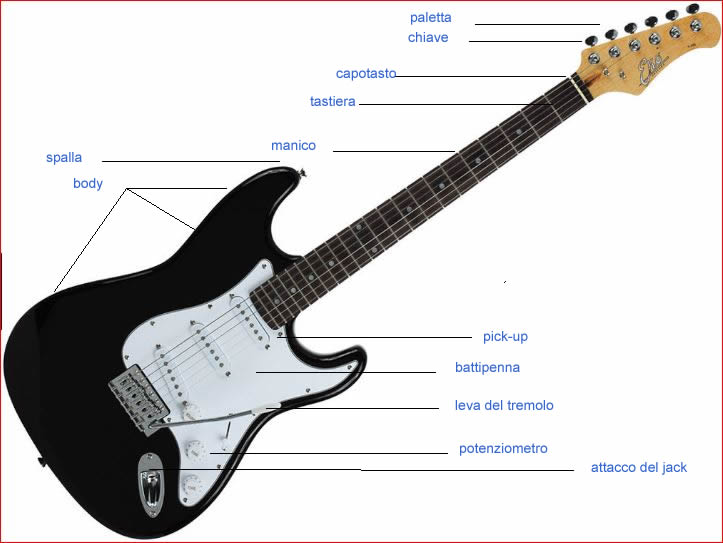
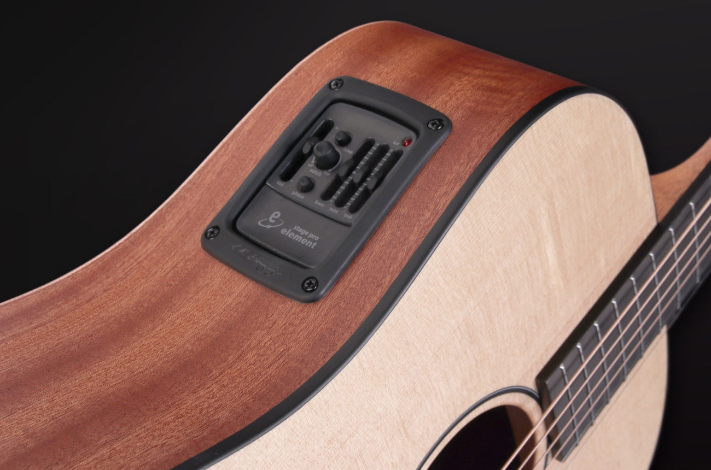
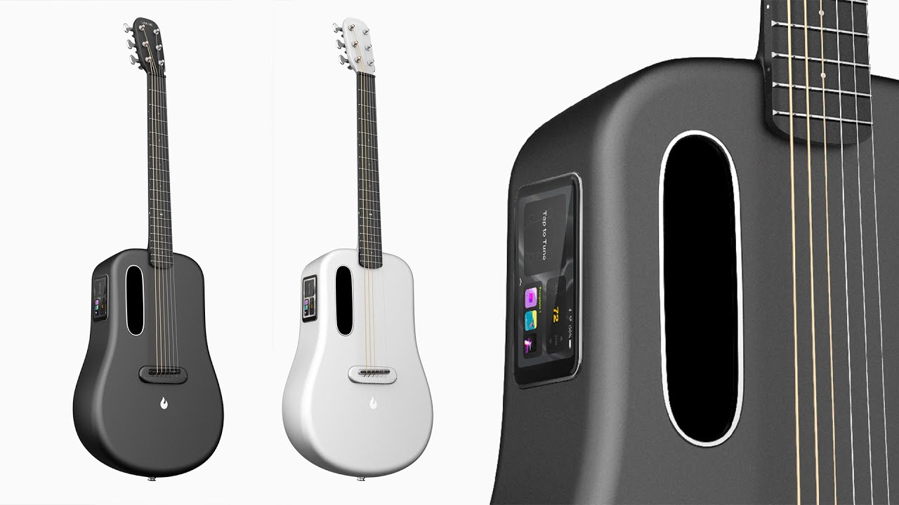
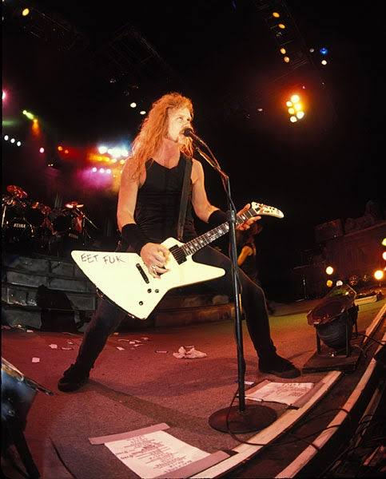
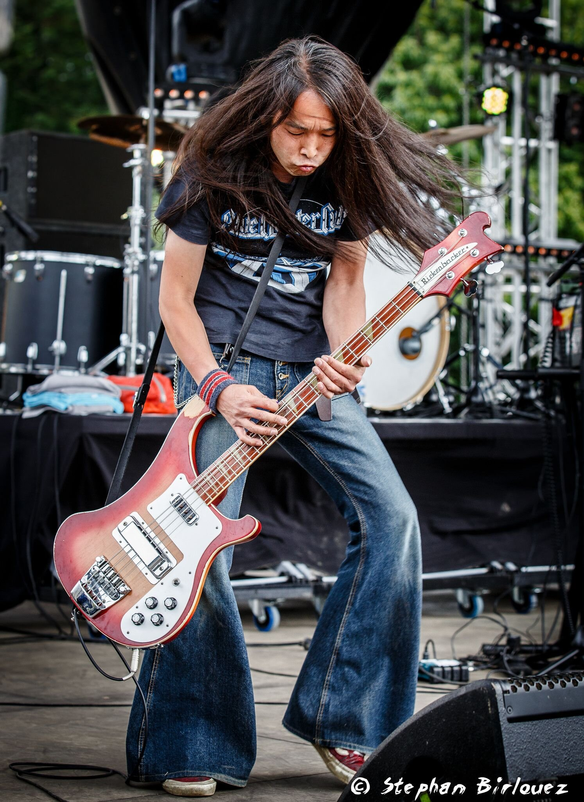

Video Introduttivo
Breve Storia della Chitarra
La chitarra ha origini antichissime, evolvendosi nel corso dei secoli in diverse varianti come la classica, acustica ed elettrica. Originata dagli strumenti a corda del Medioevo, ha raggiunto la sua forma moderna nel XIX secolo.
Parti della Chitarra comuni su tutti i tipi
- Parte principale dello strumento, varia di forma e materiale a seconda del tipo di chitarra.
- Funzione: Nelle chitarre acustiche amplifica il suono, mentre nelle elettriche contribuisce con il sustain(durata del suono) e al timbro(tono del suono).
- Collegato al corpo, ospita la tastiera e le corde.
- Materiali comuni: Acero, mogano, palissandro.
- Può essere: incollato (set-neck), avvitato (bolt-on) o che attraversa tutto il corpo (neck-through).
- Superficie su cui vengono premute le corde per variare l'intonazione
- Dotata di tasti(fret) che separano le note.
- Pezzo di plastica, osso o grafite posto all'inizio della tastiera.
- Funzione: Mantiene le corde alla giusta altezza e distanza.
- Situate sulla paletta, servono a tendere o allentare le corde per l'accordatura.
- Possono essere aperte o chiuse (sigillate per una maggiore durata)
- In nylon (chitarre classiche) o acciaio (acustiche ed elettriche).
- Vibrazioni trasmesse alla cassa armonica (acustiche) o ai pickup (elettriche)
Corpo:
Manico:
Tastiera:
Capotasto:
Meccaniche (chiavi di accordatura):
Corde:
Parti chitarre classiche e acustiche
- Superficie del corpo che amplifica il suono delle corde tramite vibrazioni.
- Materiali: Abete, cedro (influisce sul timbro o tone).
- Foro centrale nelle chitarre acustiche e classiche.
- Funzione: permette all'aria di vibrare, amplificando il suono.
- Situato sul corpo, sostiene le corde e trasmette la vibrazione alla cassa armonica.
- Selletta: Piccola barra che determina l'altezza delle corde con dei tagli.
Cassa o tavola armonica:
Buco di risonanza:
Ponticello e Selletta:
Parti chitarre elettriche
- Superficie del corpo che amplifica il suono delle corde tramite vibrazioni.
- Materiali: Abete, cedro (influisce sul timbro o tone).
- Possono essere attivi (cioè richiedono una batteria esterna e hanno un preamplificatore all'iterno) o passivi (costituiti solo di bobina e magnete)
- Foro centrale nelle chitarre acustiche e classiche.
- Funzione: permette all'aria di vibrare, amplificando il suono.
- Supporta le corde e regola l'intonazione
- Tipologie:
- Fisso (Hardtail) - Stabile, usato su Gibson Les Paul, Telecaster.
- Tune-o-matic - Classico di Gibson, regolabile per l'intonazione.
- Tremolo (Vibrato Floyd Rose o Stratocaster)
- Porta da cui esce il segnale elettrico per collegarsi ad un amplificatore.
Pickup:
Controlli (Potenziometri):
Ponte (Bridge):
Jack di uscita:
Parti chitarre elettroacustiche
- Situato sotto la selletta, cattura le vibrazioni delle corde senza bisogno di magneti.
- Preamplificatore con controlli di volume, tono ed equalizzazione
- Possono avere accordatore integrato, preset di timbri (tone), modifiche di equalizzazione e volume, etc.. 
Pickup piezoelettrico:
Preamp:
Moderne:
Brand e Forme iconiche
Fender (USA, 1946)
- Modelli celebri: Stratocaster, Telecaster, Jazzmaster.
- Suono: Brillante, definito, perfetto per rock,blues,pop.
Gibson (USA, 1902)
- Modelli celebri: Les Paul, SG, ES-335, Flying V.
- Suono: Caldo, potente, amato nel rock e nel metal.
Ibanez (Giappone, 1957)
- Modelli celebri: RG, JEM (Steve Vai), AZ.
- Suono: Versatile, ottimo per shred e metal.
PRS - Paul Reed Smith (USA, 1985)
- Modelli celebri: Custom 24, McCarty.
- Suono: Equilibrato e di alta qualità, usato nel rock, blues e fusion.
Brand Specializzati e Boutique
- 🎸Gretsch - Chitarre hollow-body per rockabilly, jazz e blues.
- 🎸Rickenbacker - Suono jangle-pop usato dai Beatles
- 🎸ESP - Perfetta per il metal (usata da Metallica)
- 🎸Jackson - Famosa per le forme aggressive e i pickup potenti.
- 🎸Schecter - Ottima per hard rock e metal
Forme di chitarra più famose
Fender Stratocaster (1954)
- Corpo sagomato, 3 pickup single coil.
- Suonata da Jimi Hendrix, Eric clapton, John Mayer.
Fender Telecaster (1950)
- Corpo singolo taglio, 2 pickup single coil
- Usata in country, rock e blues.
Gibson Les Paul (1952)
- Corpo solido e pesante, humbucker potenti.
- Suonata da Slash, Jimmy Page, Zakk Wylde.

Gibson SG (1961)
- Corpo sottile e doppia spalla mancante
- Suonata da Angus Young (AC/DC), Tony Iommi (Black Sabbath).
Gibson Flying V (1958)
- Design futuristico a "V".
- Usata nel metal (Jimi Hendrix, Kirk Hammett)
Gibson Explorer (1958)
- Forma angolare e aggressiva.
- Popolare nel metal e hard rock (James Hetfield, John Frusciante).
Martin Dreadnought (1916)
- Standard per le chitarre acustiche.
- Suonata da Johnnt Cash, Ed Sheeran.
- Suono caldo e bilanciato, popolare nel folk.
- Perfetta per fingerpicking e suono moderno.
- Chitarra semi-hollow con suono caldo e jazzistico.
Come Tenere la Chitarra
✅Seduto: (Originale)
- Siediti su una sedia con la schiena dritta.
- Appoggia il piede sinistro su un poggiapiedi (o usa un supporto per la chitarra).
- Posiziona la curvatura della chitarra sulla coscia della gamba sinistra e avvicina la chitarra al torace con il braccio destro.
- Il manico della chitarra deve puntare verso l'alto a circa 45° (altezza spalle).
- Il braccio destro si appoggia sulla parte superiore della chitarra.
- ❌Schiena curva o troppo inclinata in avanti.
- ❌Tenere la chitarra troppo orizzontale, rende difficile l'accesso ai tasti.
✅Seduto: (Chitarra Elettrica)
- Siediti su una sedia con la schiena dritta, senza appoggiarti troppo indietro.
- Posiziona la chitarra sulla gamba destra.
- Inclina leggermente la chitarra verso di te e un po' verso l'alto per vedere la tastiera.
- Il gomito destro aiuta a mantenere la chitarra stabile.
- ❌Appoggiare il gomito sulla gamba, bloccando il movimento della mano.
- ❌Piegarsi troppo in avanti per guardare la tastiera, o piegare troppo indietro la chitarra.
✅In piedi:
Usa una tracolla regolata correttamente:
- La chitarra deve stare all'altezza della vita o leggermente più in alto.
- Il manico deve essere leggermente inclinato verso l'alto
Mantieni una posizione rilassata, con spalle dritte.
Il braccio destro tiene stabile la chitarra senza fare pressione
Il pollice della mano sinistra deve rimanere dietro al manico per agevolare il movimento
- ❌Chitarra troppo bassa ("punk style") --> Difficoltà nel raggiungere i tasti.  
- ❌Piegarsi troppo in avanti --> Affatica la schiena.